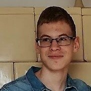

Magamról

Rohovszky Ákos vagyok, és a Számalk Szalezi Technikum és Szakgimnáziumban Softverfejlesztő és tesztelő szakon tanulok. Szeretek programozni, főleg Python és C# nyelven.
Rohovszky Ákos vagyok, és a Számalk Szalezi Technikum és Szakgimnáziumban Softverfejlesztő és tesztelő szakon tanulok. Szeretek programozni, főleg Python és C# nyelven.